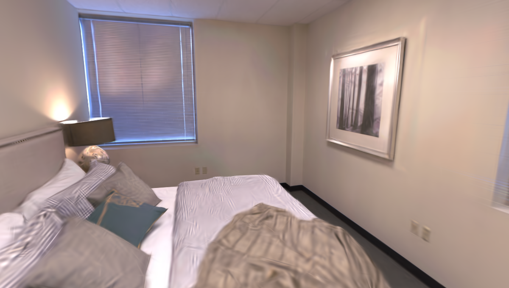
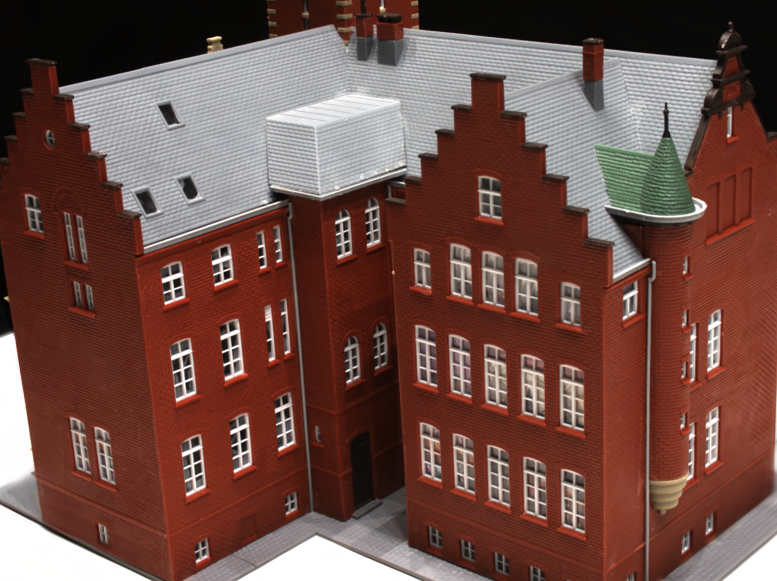
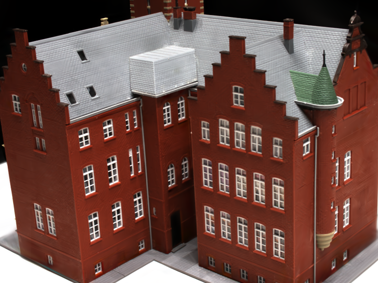
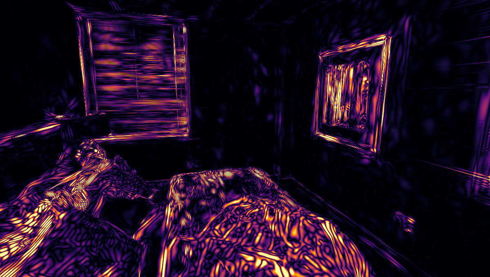

Replica · room1 · held-out frame 400

Sparse Local Wave Modulation for Appearance and Geometry Reconstruction
National Center for High-performance Computing, National Institutes of Applied Research
Overview
2D Gaussian Splatting (2DGS) provides an explicit scene representation for novel-view rendering and surface reconstruction. However, its appearance model offers limited spatial variation within each primitive, leaving locally complex appearance to be represented largely through additional primitives introduced by densification. We introduce Wave-2DGS, a minimal explicit and sparse local-wave augmentation for 2DGS. Each primitive receives one learnable sinusoidal RGB residual in local 2D coordinates, parameterized by amplitude, spatial frequency, and phase, while group-sparse regularization suppresses unnecessary wave amplitudes. Setting an amplitude to zero exactly recovers the original 2DGS appearance. Extensive experiments on Replica and DTU demonstrate consistent improvements in novel-view rendering and surface reconstruction quality. Post-training amplitude thresholding removes 73.4% of the wave payload while retaining 98.8% of the PSNR gain over 2DGS. Controlled ablations further verify the contribution and selective spatial allocation of the learned sinusoidal representation.
Comparison and visualization
Compare rendering quality and inspect the learned wave contribution.
Separately trained models with the same primitive budget.
Replica · room1 · held-out frame 400

DTU · scan24 · frame 33

One trained Wave-2DGS checkpoint, with its residual off or on.
Replica · room1 · held-out frame 400
DTU · scan24 · frame 33

Normalized |Wave On − Wave Off| localizes the residual's image-space effect.
Replica · room1 · held-out frame 400

DTU · scan24 · frame 33
Drag · swipe · or focus a slider and use the arrow keys
Method
The original spherical-harmonic branch models view-dependent color. A second, view-independent branch adds local spatial variation in normalized tangent-plane coordinates while sharing the primitive geometry, opacity, visibility, and Gaussian support.